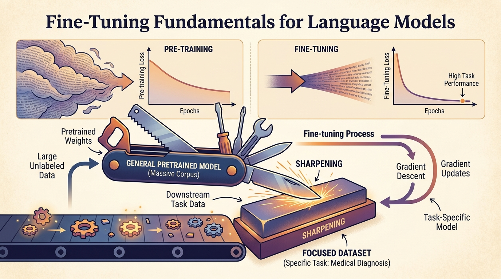

"The secret of getting ahead is getting started. The secret of fine-tuning is knowing when to stop."
Loosely adapted from Mark Twain, as repeated by ML engineers watching their validation loss curve

Pre-trained language models are powerful general-purpose tools, but they often fall short on specialized tasks that require domain-specific knowledge, a particular output style, or strict formatting. Fine-tuning bridges this gap by adapting a pre-trained model to your specific use case through additional training on curated data. The result is a model that retains its broad language understanding while gaining the ability to excel at your particular task.
This module covers the complete fine-tuning workflow from first principles. You will learn when fine-tuning is the right approach (and when prompting or RAG is a better alternative), how to prepare high-quality training data in the correct format, and how to run supervised fine-tuning with Hugging Face TRL. The module also covers API-based fine-tuning through providers like OpenAI and Google, fine-tuning for embedding and classification tasks, and strategies for adapting models to handle longer contexts.
By the end of this module, you will be able to make informed decisions about when to fine-tune, prepare datasets in standard formats, execute training runs with appropriate hyperparameters, monitor training progress, and adapt models for specialized tasks including classification, representation learning, and long-context processing.
Who: A three-person ML team at HealthFirst, a mid-size health insurance company.
Situation: Claims reviewers spent 40 minutes per case reading lengthy clinical notes to extract key diagnoses and procedures.
Problem: Prompt engineering with GPT-4 produced summaries that were accurate about 70% of the time, but frequently missed insurance-specific terminology and billing codes that reviewers needed.
Dilemma: The team debated whether to invest six weeks in fine-tuning a smaller model or continue iterating on prompts, which had already consumed three weeks with diminishing returns.
Decision: They fine-tuned Llama 2 7B on 4,000 manually reviewed clinical summaries annotated by senior claims reviewers.
How: Using LoRA adapters and the Hugging Face TRL library, they trained for three epochs with a learning rate of 2e-5, validating against a held-out set of 500 summaries scored by reviewers.
Result: Accuracy on domain-specific terms jumped to 94%, reviewer time per case dropped to 12 minutes, and inference cost fell by 85% compared to the GPT-4 prompting approach.
Lesson: When the gap between general-purpose model output and domain requirements is wide, fine-tuning on a modest dataset of expert-annotated examples often outperforms elaborate prompt engineering.
Who: The NLP team at LegalEdge, a contract analytics startup serving Fortune 500 legal departments.
Situation: Clients needed to automatically flag 23 types of risky clauses (indemnification, limitation of liability, non-compete, etc.) across thousands of vendor contracts.
Problem: Off-the-shelf text classifiers trained on general legal corpora achieved only 61% F1 on the company's proprietary clause taxonomy, which included subtle distinctions between clause variants that generic models could not capture.
Dilemma: Building a classification pipeline from scratch would take months. Fine-tuning a pre-trained encoder model was faster but required significant labeling effort.
Decision: They fine-tuned DeBERTa-v3-large with a multi-label classification head, using 8,000 clause excerpts labeled by paralegals over four weeks.
How: They used class-weighted loss to handle severe imbalance (some clause types appeared in only 2% of contracts), froze the bottom 18 layers for the first epoch, then unfroze all layers with a discriminative learning rate schedule.
Result: F1 score rose to 91% across all 23 clause types, and the system processed a 200-page contract in under 10 seconds.
Lesson: For multi-label classification with domain-specific categories, fine-tuning an encoder model with a task-specific head and class-weighted loss is far more effective than trying to coerce a generative model into structured predictions.
Who: The conversational AI team at Nomad Finance, a digital banking startup with 2 million users.
Situation: Their support chatbot, powered by a general-purpose LLM via API, answered questions correctly but in a tone that customers described as "robotic" and "cold," clashing with the brand's friendly, informal voice.
Problem: Prompt engineering with system messages improved tone somewhat, but the model frequently reverted to formal phrasing, especially on complex multi-turn conversations about disputed charges.
Dilemma: The team could either keep paying for a large model via API (with inconsistent tone) or invest in fine-tuning a smaller model on their 12,000 real support transcripts that had been rated "excellent" by customers.
Decision: They fine-tuned Mistral 7B on the curated transcripts formatted in ShareGPT multi-turn conversation style.
How: They used SFT with TRL, trained for two epochs with cosine learning rate decay, and added a validation set of 1,500 conversations scored on both accuracy and tone by human raters.
Result: Customer satisfaction scores rose 18 points, tone consistency improved from 64% to 97% as rated by human evaluators, and per-query inference cost dropped by 90% compared to the API approach.
Lesson: When the core issue is style, tone, or brand voice rather than factual knowledge, fine-tuning on examples that embody the desired voice is often the most reliable path to consistency.
Fine-tuning a language model is a lot like teaching a well-read professor to write birthday cards. The knowledge is all there; you just need a few examples to convince them that "Wishing you a day as wonderful as you are!" is, in fact, the correct output format.
Who: A solo ML engineer at AgroVision, an agricultural technology company providing crop monitoring via satellite imagery.
Situation: Field agronomists needed detailed disease assessment reports generated from structured sensor data (humidity levels, leaf discoloration percentages, GPS coordinates), but the existing system produced only raw data tables.
Problem: General-purpose LLMs could generate fluent text from the data, but they hallucinated disease names, invented pesticide recommendations, and ignored regional regulations about approved treatments.
Dilemma: RAG could ground the model in a pesticide database, but the output format (a four-section report with severity scores, treatment timelines, and regulatory citations) was too rigid for RAG alone to handle reliably.
Decision: They combined RAG for the pesticide database with fine-tuning Phi-2 on 2,200 expert-written reports to nail the output structure and domain terminology.
How: Training data was formatted in Alpaca instruction style, with the structured sensor data as input and the expert report as output. They trained for five epochs with early stopping based on ROUGE-L against the validation set.
Result: Hallucinated disease names dropped from 23% to under 1%, report formatting compliance reached 99%, and agronomists saved an average of 25 minutes per field visit.
Lesson: Fine-tuning and RAG are not competing strategies; combining them lets you ground factual content in a knowledge base while ensuring the model masters your specific output format and domain vocabulary.
Who: The localization engineering team at TransGlobal, a translation services company handling regulatory filings for pharmaceutical clients.
Situation: Regulatory submissions often exceeded 30,000 tokens, but the team's fine-tuned translation model had a 4,096-token context window, forcing them to split documents into chunks that lost cross-reference coherence.
Problem: Chunked translations introduced inconsistent terminology across sections (the same drug compound was translated differently in the introduction versus the clinical results), causing regulatory rejection.
Dilemma: Switching to a model with a larger native context window would require retraining from scratch on their proprietary parallel corpus of 50,000 aligned document pairs.
Decision: They applied RoPE scaling with position interpolation to extend their existing fine-tuned model from 4K to 32K tokens, followed by a short continued pre-training phase on 500 long documents.
How: They scaled the RoPE base frequency by a factor of 8, then ran continued pre-training for 200 steps on long regulatory documents with a very low learning rate (5e-6) to stabilize the extended positions.
Result: The model maintained its translation quality on short documents while handling 30K-token filings in a single pass. Terminology consistency across sections improved from 76% to 98%.
Lesson: Context extension techniques like RoPE scaling can save enormous retraining costs by adapting an already fine-tuned model to longer sequences, provided you follow up with a brief stabilization phase on representative long documents.
The three stages of fine-tuning: (1) "This is going to be easy, I just need some data." (2) "Why is my model generating the training data verbatim?" (3) "Ah, so that is what a learning rate of 1e-3 does to a 7B parameter model." Every ML practitioner completes this trilogy at least once.
In the next section, Section 13.1: When and Why to Fine-Tune, we address the key question of when and why to fine-tune, establishing decision frameworks for model adaptation.
Howard, J. and Ruder, S. "Universal Language Model Fine-tuning for Text Classification." (ULMFiT, 2018). arXiv:1801.06146
Pioneered transfer learning for NLP with discriminative fine-tuning and gradual unfreezing, establishing the pretrain-then-fine-tune paradigm.
Ouyang, L., et al. "Training Language Models to Follow Instructions with Human Feedback." (InstructGPT, 2022). arXiv:2203.02155
Describes the supervised fine-tuning and RLHF pipeline used to create InstructGPT, the template for modern instruction-tuned models.
Taori, R., et al. "Stanford Alpaca: An Instruction-following LLaMA Model." (2023). github.com/tatsu-lab/stanford_alpaca
Demonstrated that fine-tuning LLaMA on 52K instruction-following examples produced a capable assistant, popularizing the Alpaca data format.
Chen, S., et al. "LongLoRA: Efficient Fine-tuning of Long-Context Large Language Models." (2024). arXiv:2309.12307
Proposes shifted sparse attention for efficient long-context fine-tuning, extending context windows with minimal additional compute.
Ding, J., et al. "Data Mixing Laws: Optimizing Data Mixtures by Predicting Language Modeling Performance." (2024). arXiv:2403.16952
Derives scaling laws for data mixing ratios during fine-tuning, helping practitioners optimize the blend of domain and general data.
Dodge, J., et al. "Fine-Tuning Pretrained Language Models: Weight Initializations, Data Orders, and Early Stopping." (2020). arXiv:2002.06305
Systematic study of fine-tuning instability, showing how random seeds, data order, and early stopping affect final model quality.
He, J., et al. "Towards a Unified View of Parameter-Efficient Transfer Learning." (2022). arXiv:2110.04366
Provides a theoretical framework unifying adapters, prefix tuning, and LoRA under a common lens, useful for choosing between full and parameter-efficient fine-tuning.
Goodfellow, I., Bengio, Y., and Courville, A. Deep Learning, Chapter 8: Optimization. MIT Press, 2016. deeplearningbook.org
Covers the optimization fundamentals (SGD, Adam, learning rate schedules) essential for understanding fine-tuning hyperparameters.
Su, J., et al. "RoFormer: Enhanced Transformer with Rotary Position Embedding." (2024). arXiv:2104.09864
Introduces Rotary Position Embedding (RoPE), the positional encoding used in most modern LLMs and the basis for context extension techniques.
Hugging Face TRL (Transformer Reinforcement Learning). github.com/huggingface/trl
The primary library for SFT, DPO, and RLHF training of language models, with Trainer classes and dataset utilities.
Hugging Face Transformers. github.com/huggingface/transformers
The ecosystem's core library providing model architectures, tokenizers, and the Trainer class for fine-tuning on custom datasets.
Weights & Biases (W&B). github.com/wandb/wandb
Experiment tracking and visualization platform widely used to monitor fine-tuning runs, log metrics, and compare hyperparameter sweeps.
OpenAI Fine-Tuning Guide. platform.openai.com/docs/guides/fine-tuning
Official documentation for OpenAI's hosted fine-tuning service, covering data format requirements, training parameters, and cost estimation.